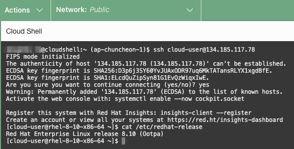

OCI에 레드햇 리눅스 사용하기
지난 2023년 1월에 오라클 블로그에 올라온 RHEL runs on OCI supported by Oracle and Red Hat 처럼 OCI에서 레드햇 리눅스를 지원합니다. 다만 Bring Your Own Subscription (BYOS) 모델만 지원하기 때문에, 레드햇에서 관련 라이센스 구독을 해야 하며, OCI를 통한 온디맨드 라이선스 취득은 지원하지 않습니다. OCI에서는 인프라에 대한 비용만 지불합니다. 설치 이미지 또한 레드햇 사이트에 다운로드 받아 사용해야 합니다. 그래서 Compute 인스턴스 생성시 OS를 Red Hat으로 선택하면, 아래와 같이 다른 OS 처럼 버전을 선택하는 것이 아닌, 이미지 등록 절차를 따로 설명하고 있습니다.
- 참조 - OCI의 Red Hat FAQ
- 공식 문서 상의 RHEL 이미지 등록 전체 절차 - Importing Custom Linux Images > Red Hat Enterprise Linux (RHEL) Images
- 개인 개발자들을 위해 비용없이 사용할 수 있는 개발자 구독 방식을 레드햇에서 제공하고 있습니다. 관련사항을 따라 사용할 수 있는 지 여부 확인하여, 문제가 없는 경우 개인 단순 테스트 용도로 사용할 수 있으니, 해당 사항에 따라 RHEL 이미지를 다운받아 테스트 할 수 있습니다.
Red Hat Enterprise Linux (RHEL) Images 등록하기
-
Red Hat Ecosystem Catalog - Oracle Cloud Infrastructure에서 사용할 RHEL 버전과 OCI Compute shape에서 지원하는 버전을 확인합니다.
-
여기서는 예시로 RHEL 8.10를 사용한다는 가정하여, 사용할 AMD VM.Standard.E4.Flex Shape에 RHEL 8.10 지원여부를 확인합니다.

-
-
Red Hat Customer Portal에 접속하여 로그인합니다. Red Hat Enterprise Linux를 선택합니다. 여기서는 KVM Guest Image를 다운로드 받아 사용하겠습니다.
-
KVM Guest 이미지를 다운로드 받습니다.
-
다른 방법으로 Build latest를 클릭하여, 이미지 빌더를 통해 이미지를 생성할 수도 있습니다.
-
-
다운로드 받은 이미지 파일을 OCI Object Storage 버킷에 업로드 합니다. Compute 생성시 편의 및 이미지 관리 편의를 위해 RHEL images 전용 버킷 사용을 사용하는 것이 좋습니다. (업로드 환경에 따라 다르겠지만, 작성시 테스트기준 1.07GB 사이즈에 1분 가량 걸렸습니다.)
-
업로드한 이미지 파일을 Custom 이미지로 임포트 합니다.
-
Name: 파일명 그대로 입력
-
Operating system: RHEL
-
이미지를 업로드한 Object Storage 버킷 및 오브젝트 선택
-
Image type: QCOW2
-
Launch mode: Paravirtualized mode
-
참고로, 테스트 상황에 따라 다르겠지만, 작성시 테스트기준 Custom 이미지로 임포트 하는데, 12분 가량 걸렸습니다.
-
-
임포트된 Custom 이미지가 지원하는 Shape을 지정합니다.
-
상세정보에서 Edit details를 클릭합니다.
-
레드햇 문서상의 내용이 중요하니 임포트 후 기본 선택된 항목은 초기화합니다. Red Hat Ecosystem Catalog - Oracle Cloud Infrastructure에서 RHEL 버전과 OCI Compute shape을 다시 확인하여, 수작업으로 지원하는 Shape을 선택합니다.
- 다운로드 받은 KVM Guest Image 파일명 기준으로 ARM(aarch64) 지원은 불명확하니, 애매하니, BM.Standard.A1.160, VM.Standard.A1.Flex은 제외합니다. ARM 지원 이미지는 필요시, 레드햇에 별도 문의가 필요해 보입니다.
-
-
임포트한 RHEL Custom 이미지로, Compute 인스턴스를 생성합니다.
-
My images에서 임포트한 이미지를 선택합니다.
-
Change shape을 클릭하여, 원하는 Shape을 선택합니다. 앞서 Custom 이미지 상세 항목에서 선택한 Shape 내에서만 선택할 수 있습니다. 여기서는 AMD VM.Standard.E4.Flex Shape으로 선택하겠습니다.
-
Compute 인스턴스 생성에 필요한 다른 정보는 원하는 값으로 입력합니다.
-
-
생성한 Compute 인스턴스에 SSH로 접속합니다. 접속 OS 유저명은
cloud-user입니다. 아래와 같이 잘 접속이 되는 것을 확인할 수 있습니다.
이 글은 개인으로서, 개인의 시간을 할애하여 작성된 글입니다. 글의 내용에 오류가 있을 수 있으며, 글 속의 의견은 개인적인 의견입니다.